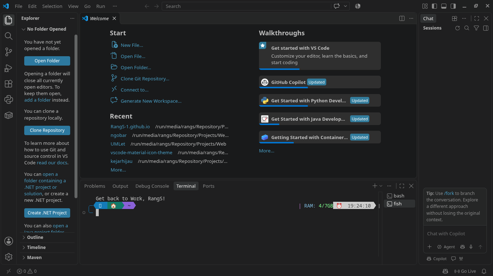
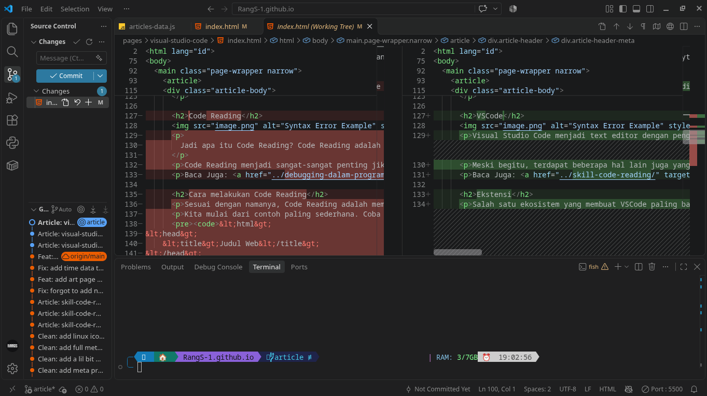
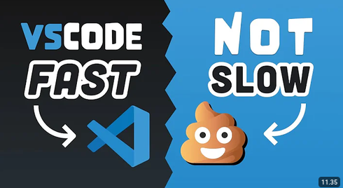

Apa itu Visual Studio Code?
Visual Studio Code atau sering juga disebut vscode adalah text editor berbasis electron (Framework JS untuk aplikasi desktop).
"Code is read much more often than it is written."
— Guido Van Rossum, pencipta bahasa pemrograman Python
Pada artikel ini, kita akan penggunaan Visual Studio Code secara efisien dan cepat, mungkin bisa setara dengan Vim.
VSCode

Visual Studio Code menjadi text editor dengan pengguna terbanyak karena ukurannya yang relatif ringan. Tidak hanya itu, VSCode juga menjadi text editor yang cukup ramah untuk pemula karena ekosistemnya dan penggunaannya dalam pembelajaran (sekolah ataupun bootcamp).
Meski begitu, terdapat beberapa hal lain juga yang membuat vscode ini sangat banyak digunakan.
Baca Juga: Code Reading: kemampuan memahami kode hanya dengan melihat kode
Ekstensi
Salah satu ekosistem yang membuat VSCode paling banyak dipakai adalah ekstensi. Ekstensi sendiri adalah fitur tambahan yang dibuat oleh developer lain. Ekstensi sendiri harus diinstall secara terpisah karena tidak selalu tersedia secara langsung ketika pertama kali install vscode.
Ekstensi di VSCode tidak hanya tentang fungsionalitas, tetapi juga tampilan. Contoh dari ekstensi tampilan adalah ekstensi material-icon, theme, dan lain-lain. Sementara fungsionalitas seperti Pylance, Laravel Blade Snippet, dan masih banyak lagi.
Git
Alasan kedua yang membuat VSCode paling sering dipakai adalah visualisasi Git. Pada sidebar bagian kiri (secara default) terdapat logo branch git. Ketika di klik, maka akan menampilkan perubahan kode, branch saat ini tanpa perlu menggunakan CLI (Command Line Interface lagi).

Meski memiliki visualisasi Git, VSCode tetap memperbolehkan penggunaan Terminal tergantung dengan jenis Shell yang digunakan (Shell itu seperti Bash, Zsh, Powershell, CMD, Fish Shell, dan lain-lain).
Baca Juga: Git: Sang pengontrol versi terbaik andalan programmer
Shortcut pada VSCode
Agar penggunaan VSCode lebih efisien, kita harus tahu bagaimana cara menggunakan Shortcut. Salah satu yang paling berguna adalah perintah:
code .Perintah diatas digunakan untuk membuka aplikasi VSCode dari terminal. Kenapa sangat berguna? Karena kode tersebut akan membuka vscode sekaligus dengan folder dimana kau berada sebelumnya. Hanya saja, perintah tersebut akan lebih berguna jika kau sangat-sangat sering menggunakan terminal atau CLI. Jadi kusarankan pelajari lebih dulu tentang cara mengggunakan terminal:
Baca Juga: Terminal: Kawan Sejati Programmer
Setelah kau mulai memahami cara kerja dari terminal atau CLI. Saatnya kita bahas shortcut di VSCodenya, berikut adalah list shortcut:
# Shortcut VSCode
Ctrl + P #membuka command palette
Ctrl + Shift + P #membuka command palette
Ctrl + B #menyembunyikan sidebar
Ctrl + Shift + E #menampilkan sidebar explorer
Ctrl + Shift + F #menampilkan sidebar search
Ctrl + Shift + G #menampilkan sidebar source control
Ctrl + Shift + D #menampilkan sidebar debug
Ctrl + Shift + X #menampilkan sidebar extensions
Ctrl + ` #membuka terminal
Ctrl + K Ctrl + S #menampilkan semua shortcut
Ctrl + / #mengaktifkan komentar
#Shortcut untuk navigasi
Ctrl + Tab #berpindah ke tab berikutnya
Ctrl + Shift + Tab #berpindah ke tab sebelumnya
Ctrl + Page Up #berpindah ke tab sebelumnya
Ctrl + Page Down #berpindah ke tab berikutnya
#Shortcut untuk navigasi file
Ctrl + P #membuka file
Ctrl + Shift + O #membuka symbol
Ctrl + G #membuka line number, btw mirip kayak vim
Ctrl + Shift + M #membuka problems
#Shortcut pointer/cursor
Ctrl + Shift + L #memilih semua kata yang sama
Ctrl + D #memilih kata yang sama kebawah pointer
Ctrl + U #membatalkan pilihan kata yang sama
#Ini shortcut di Linux, mungkin di Windows berbeda
Ctrl + Shift + Arrow Up #menambahkan pointer/cursor keatas
Ctrl + Shift + Arrow Down #menambahkan pointer/cursor kebawah
Alt + Arrow Up #memindahkan pointer/cursor keatas
Alt + Arrow Down #memindahkan pointer/cursor kebawahKesimpulan
Jadi, kesimpulannya adalah Visual Studio Code adalah text editor yang sangat populer karena ukurannya yang ringan, ekosistem ekstensi yang luas, dan fitur visualisasi Git yang memudahkan pengembangan perangkat lunak. Dengan memahami shortcut dan cara menggunakan terminal, pengguna dapat meningkatkan efisiensi mereka dalam menggunakan VSCode. Kau bisa pelajari lebih lanjut dari video buatan Fireship di bawah ini:
Link ke Video.
